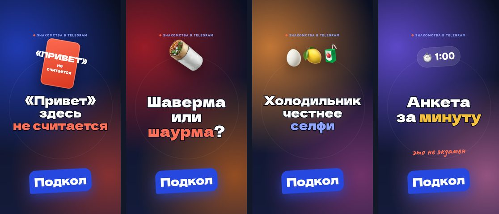
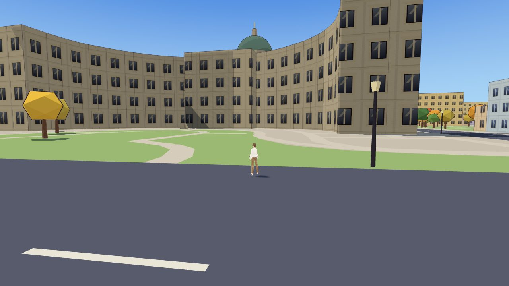
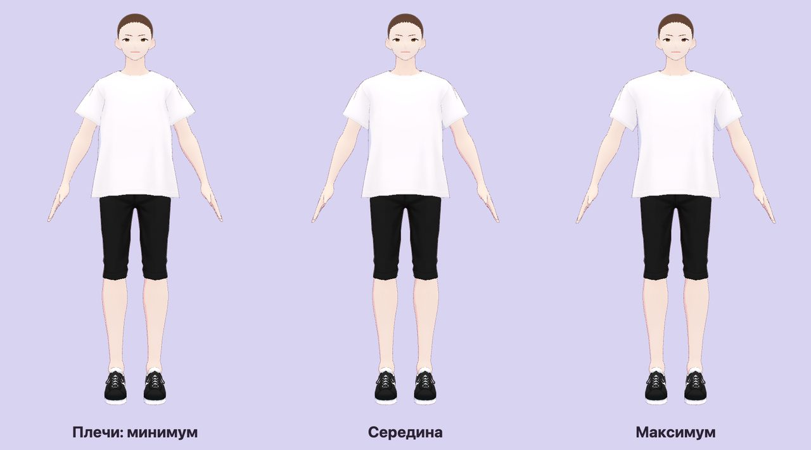

Что я делаю сам от идеи до запуска: приложения, сайты, лендинги и медиа. Продукт, тексты, дизайн, разработка с нейросетями и продвижение.

Свой продукт · Telegram mini-app
Подкол
Знакомства через юмор внутри Telegram. Вместо лайка человек отвечает шуткой на конкретный ответ из анкеты, «Привет» не принимается. Фото открываются только после 10 реплик в чате.
Анкета из трёх вопросов, ответы словами или фото, лента по городу
Чат с играми «Это или это?» и «Две правды и одна ложь», «Подкол дня» с напоминанием от бота
Жалобы, блок и модерация через бота
Метки источников (VK, YouTube, Rutube, Дзен) и воронка в статистике: старт → анкета → подкол → чат
Бренд, обложки и серия из 14 Reels и 6 роликов для YouTube под запуск
Что делал идея, продукт, тексты, бренд, промо, разработка
Стек Python, FastAPI, SQLite, Telegram Bot API, Mini Apps
Статус тестирование


Свой продукт · 3D-игра в браузере
Питер Лайф
Симулятор жизни в Санкт-Петербурге. Город собран по реальной карте OpenStreetMap: улицы, дома, магазины и места от Дворцовой площади и Исаакия до Кронштадта и Выборга.
Создание героя: внешность, причёски, телосложение, одежда
Походки и анимации: от модельной до крадущейся, бег, прыжки, плавание
Магазины и заведения с ценами в рублях: одежда, еда, машины, питомцы, вещи для квартиры
Живой город: прохожие, машины, голуби, чайки, кошки и собаки
Что делал идея, геймдизайн, сбор карты, разработка
Лендинг на английском для велнес-города у Virgin Beach на востоке Бали. Аудитория: европейцы, которые хотят жить на Бали сезон или постоянно, и инвесторы.
Бренд-подача «Just be.», смарт-виллы и семейные виллы по очередям
Калькулятор дохода, карта локаций, интерьеры и палитра материалов
FAQ, форма заявки и WhatsApp
SEO: разметка цен и FAQ, Open Graph; вертикальные видео для Reels